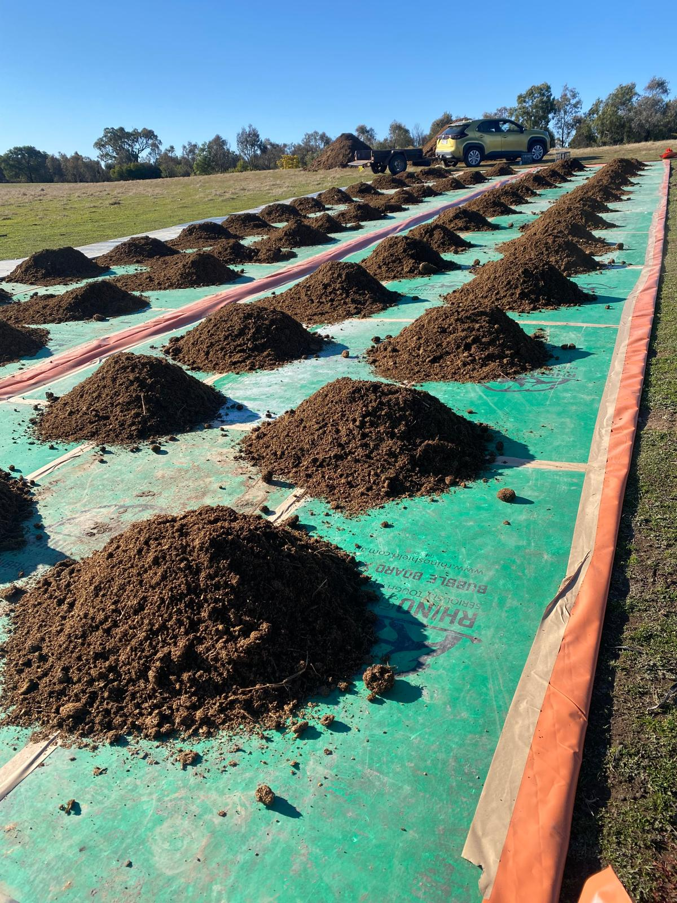

Jurassic Pumpkins!
We planted pumpkins on our worm windrows and they HAVE GONE JURASSIC!!


Cut Fertiliser Costs. Build Better Soil.
| Superphosphate System | Worm Juice System |
|---|---|
| Adds phosphorus | Unlocks existing soil nutrients |
| Short-term boost | Builds long-term soil fertility |
| Prices rising sharply | Low cost per hectare |
Traditional fertilisers like superphosphate work by adding nutrients directly to your soil. However, much of this phosphorus becomes locked up and unavailable to plants.
Worm juice works differently. With over 500,000 microbes per gram and high fungal activity, it activates soil biology to unlock nutrients already present in your soil.
The most profitable system is not replacing fertiliser completely, but reducing it. Many farmers cut superphosphate use by 20–40% while maintaining or improving pasture growth.
Global supply disruptions and war have significantly increased fertiliser prices in recent years. Reducing reliance on imported inputs protects your farm from rising costs.
Combine worm juice with reduced fertiliser:
✔ Lower costs
✔ Better soil biology
✔ Improved long-term productivity
We planted pumpkins on our worm windrows and they HAVE GONE JURASSIC!!
